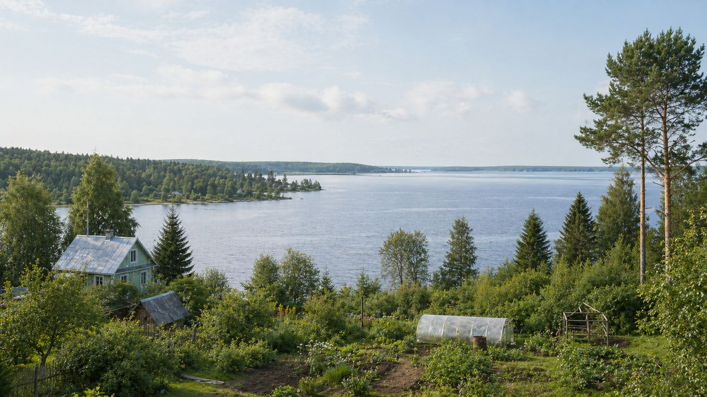

Главная / Ярославская область / северо-западные леса и Рыбинское водохранилище

Ярославская область · северо-запад
Что посадить
Что посадить
у Рыбинского водохранилища
Более прохладная и влажная часть области с лесами, ветром у большой воды и частыми сырыми низинами. Здесь надёжнее всего работают картофель, капустные, корнеплоды, зелень и зимостойкие ягодники.
Культуры и рекомендации
По умолчанию культуры отсортированы по надёжности: сначала надёжные, затем рекомендованные, с укрытием и рискованные. Сроки ориентировочные — их стоит уточнять по погоде конкретного сезона.
| Культура | Категория | Рекомендация | Где лучше | Сроки | Комментарий |
|---|---|---|---|---|---|
| Гороховощная бобовая культура | Овощи | Надёжно | Открытый грунт | Посев: конец апреля — май. | Ранний посев хорошо использует прохладную весну и обычно даёт стабильный урожай. |
| Жимолостьягодный кустарник | Ягодные | Надёжно | Сад | Посадка: апрель или сентябрь; сбор — июнь. | Одна из самых надёжных ягод для северной части области: хорошо зимует и рано плодоносит. |
| Капуста белокочаннаяовощная культура | Овощи | Надёжно | Открытый грунт | Рассада: апрель; высадка: май. | Прохладный и влажный фон подходит капусте, но посадки нужно проветривать и защищать от слизней. |
| Картофельклубнеплод | Овощи | Надёжно | Открытый грунт | Посадка: май; уборка: август–сентябрь. | Базовая культура зоны; на сырых местах лучше поднимать гряды и не загущать посадки. |
| Крыжовникягодный кустарник | Ягодные | Надёжно | Сад | Посадка: апрель или сентябрь. | Хорошо зимует, любит свет и движение воздуха; на влажных участках нужна профилактика мучнистой росы. |
| Лук на перозелёная культура | Зелень | Надёжно | Грядка у дома | Посадка севка: апрель–май. | Даёт раннюю зелень даже при прохладной весне; для репки выбирают более сухую гряду. |
| Малинаягодный кустарник | Ягодные | Надёжно | Сад | Посадка: апрель или сентябрь. | Надёжна при хорошем освещении; в низинах нужен дренаж и умеренное прореживание. |
| Морковькорнеплод | Овощи | Надёжно | Открытый грунт | Посев: конец апреля — май. | Лучше получается на лёгких грядах без застоя воды; посевы полезно укрывать от корки. |
| Ревеньмноголетняя овощная культура | Овощи | Надёжно | Полутень сада | Посадка: апрель или сентябрь; сбор — май–июнь. | Любит влажную плодородную почву и хорошо вписывается в северный сад. |
| Редисранний корнеплод | Овощи | Надёжно | Открытый грунт | Посев: апрель–май и август. | Короткий прохладный цикл подходит зоне; повторные посевы лучше делать ближе к августу. |
| Салат листовойзелёная культура | Зелень | Надёжно | Открытый грунт | Посев: апрель–июнь, повторно — август. | Лучше растёт в прохладе, поэтому в жаркие недели его притеняют и чаще поливают. |
| Свёклакорнеплод | Овощи | Надёжно | Открытый грунт | Посев: май, после прогрева почвы. | Стабильна на окультуренных грядах; в холодную почву сеять не стоит. |
| Смородина чёрнаяягодный кустарник | Ягодные | Надёжно | Сад | Посадка: апрель или сентябрь. | Хорошо переносит зиму и влажный климат; лучшие ягоды даёт на светлом, но не пересушенном месте. |
| Укроппряная зелень | Зелень | Надёжно | Открытый грунт | Посев: апрель–июль, с повторениями. | Неприхотлив, быстро даёт зелень и хорошо подходит для короткого сезона. |
| Брокколикапустная культура | Овощи | Рекомендовано | Открытый грунт | Рассада: апрель; высадка: май. | В прохладной зоне часто удаётся хорошо, если не допускать пересыхания и вовремя срезать головки. |
| Вишня кустоваяплодовый кустарник | Плодовые | Рекомендовано | Защищённый сад | Посадка: апрель; обрезка — ранняя весна. | Реальнее обычной вишни на продуваемых участках; требуется солнце и сухое основание. |
| Земляника садоваяягодная культура | Ягодные | Рекомендовано | Садовая гряда | Посадка: май или август. | Нужна высокая, проветриваемая гряда; на сырых местах ягоды чаще страдают от серой гнили. |
| Кабачоктыквенная культура | Овощи | Рекомендовано | Открытый грунт | Посев или высадка: конец мая — начало июня. | Лучше растёт на тёплой гряде; в холодное начало лета помогает временное укрытие. |
| Слива зимостойкаяплодовое дерево | Плодовые | Рекомендовано | Сад | Посадка: апрель или сентябрь. | Можно выращивать зимостойкие сорта на солнечном месте без застоя холодного воздуха. |
| Чеснок озимыйовощная культура | Овощи | Рекомендовано | Открытый грунт | Посадка: конец сентября — октябрь. | Зимует хорошо при посадке в срок; на мокрых грядах особенно важен дренаж. |
| Яблоня летних сортовплодовое дерево | Плодовые | Рекомендовано | Сад | Посадка: апрель или сентябрь. | Выбирают районированные зимостойкие сорта и место выше холодной низины. |
| Груша зимостойкаяплодовое дерево | Плодовые | С укрытием / уходом | Защищённый сад | Посадка: апрель; первые зимы — защита штамба. | Возможна на тёплом месте, но хуже переносит низины и резкие зимние перепады. |
| Огурецтеплолюбивый овощ | Овощи | С укрытием / уходом | Плёночное укрытие | Рассада: май; высадка: конец мая — июнь. | Под дугами урожай стабильнее: холодные ночи и влажность тормозят открытые посадки. |
| Перец сладкийтеплолюбивый овощ | Овощи | С укрытием / уходом | Теплица | Рассада: февраль–март; высадка: конец мая. | Для открытого грунта зона холодновата; в теплице результат заметно надёжнее. |
| Томаттеплолюбивый овощ | Овощи | С укрытием / уходом | Теплица или укрытие | Рассада: март; высадка: конец мая — начало июня. | В открытом грунте возможен ранними сортами, а теплица снижает риск фитофторы. |
| Абрикосплодовое дерево | Плодовые | Рискованно | Экспериментальный сад | Посадка: весна; цветение требует защиты от заморозков. | Главный риск — зимние повреждения и раннее цветение; пробовать стоит только как опыт. |
| Арбузбахчевая культура | Бахчевые | Рискованно | Тёплая гряда под укрытием | Рассада: апрель; высадка: конец мая — июнь. | Тепла обычно недостаточно для стабильного урожая; нужны ранние сорта и укрытие. |
| Персикплодовое дерево | Плодовые | Рискованно | Экспериментальный сад | Посадка: весна; зимняя защита обязательна. | Для зоны слишком рискован: часто страдают древесина и цветковые почки. |
По выбранным фильтрам культур не найдено.